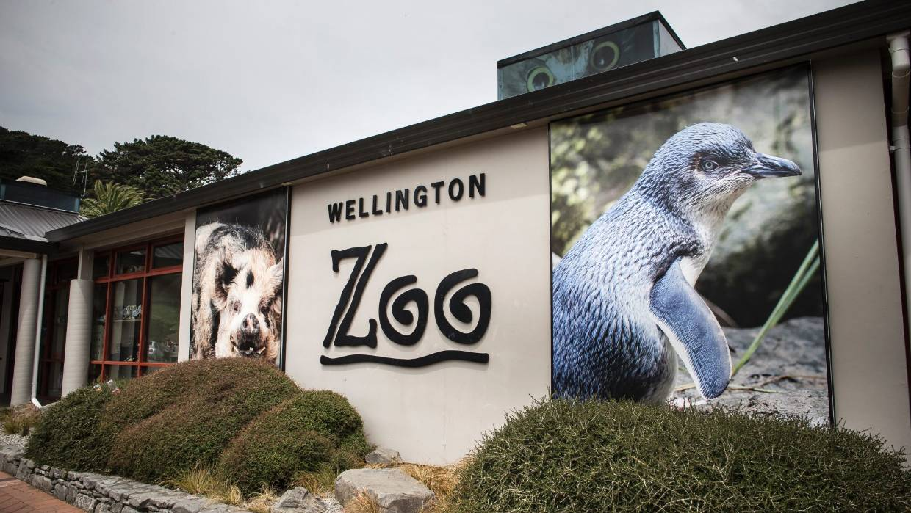
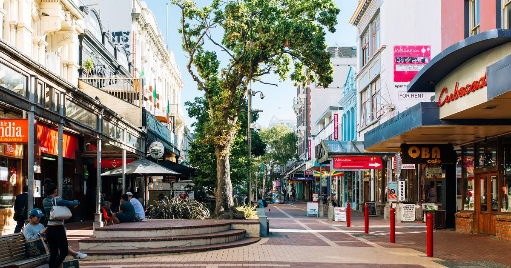

Colenso-Ma's Eco Tours offer a wide range of tours of the Greater Wellington Region. Below are the following tours available:
Whether you fancy meandering up the hills in the iconic Wellington Cable Car or having a look behind the scenes of one of film's greatest directors, this package offers a bundle of tours around Wellington's most iconic attractions! In this package, the following tours include:
You can choose from any of the locations listed above. A your guide will accompany you throughout the day. Minimal fitness is required since you will require a vehicle to get to all three of your chosen locations. The length of the tour is approximately 6 hours. The starting point will be at our main building in Lambton Quay. If you have anymore questions feel free to contact us or head to the FAQ page.
Are you an enthusiast of birds?? Or are you interested in the power of the sea? Well Colenso-Ma's Eco-Tours have you covered! We offer tours that put great emphasis on the natural history and wildlife of Wellington. The following tours are available for booking:
One of our professional tour guides will be availabe for the duration of the tour. The tour should take approximately 6 hours and will require some level of fitness since a lot of walking is involved. The starting point will be at our main building in Lambton Quay. If you have anymore questions feel free to contact us or head to the FAQ page.
Interested in a taste of the local culture in Wellington? So are we! Colenso-Ma's Eco-Tours are most proud of the tours that we provide for the local history and culture of Wellington, and in a more general sense New Zealand. The following tours are included:
Throughout this tour you will be joined by a tour guide from our services as well as tour guides from their respective locations. The tour should take 6 hours. Minimal fitness is required. If you have anymore questions feel free to contact us or head to the FAQ page.
Everyone likes to eat out, and so do we! Colenso-Ma's Eco Tours offers a range of tours that encourage your appetite! These tours include a visit to the following locations:
As with our other tours, on this tour you will be accompanied by one of our professional tour guides who know a thing or two about ethically sound food and beverages. The tour should take approximately 6 hours so take your time tasting as much food as you like. Level of fitness not neccessary, we suggest you eat up however! If you have anymore questions feel free to contact us or head to the FAQ page.